新闻动态
薄纱,就像少女时代的秘密一样,欲说还休,一旦被笼罩,便如同落入了满是迷雾的仙境,走动之间,轻柔的裙摆随风摇曳,曼妙身姿若隐若现。
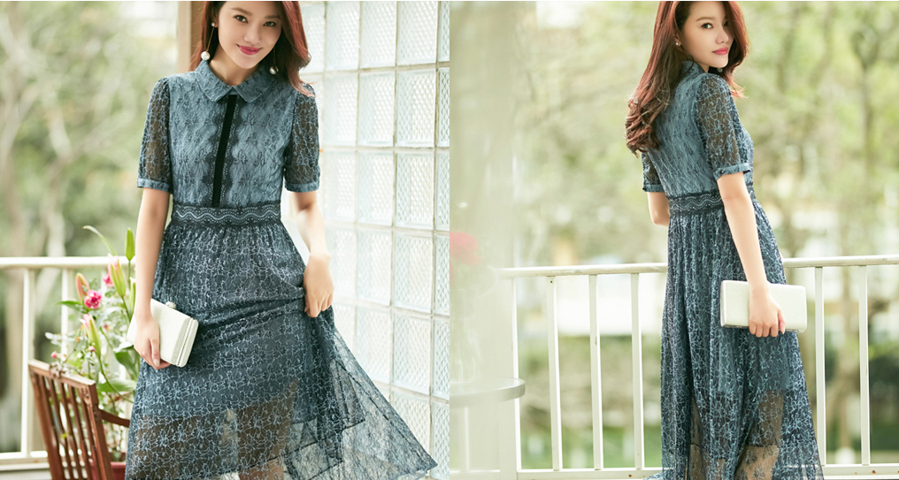

花朵是"仙女裙”的又一经典元素,集合了时下流行的芭蕾粉、山茶白之后,成片的花朵不仅没有拥挤的视觉感,反而错落有致,显得尤为清新。同时,玖姿设计师又别出心载地将花朵攀岩生长的过程展示于裙身之上,连结的花叶加深了相互羁绊,能给穿着者带来更为跳脱生动的体验感。
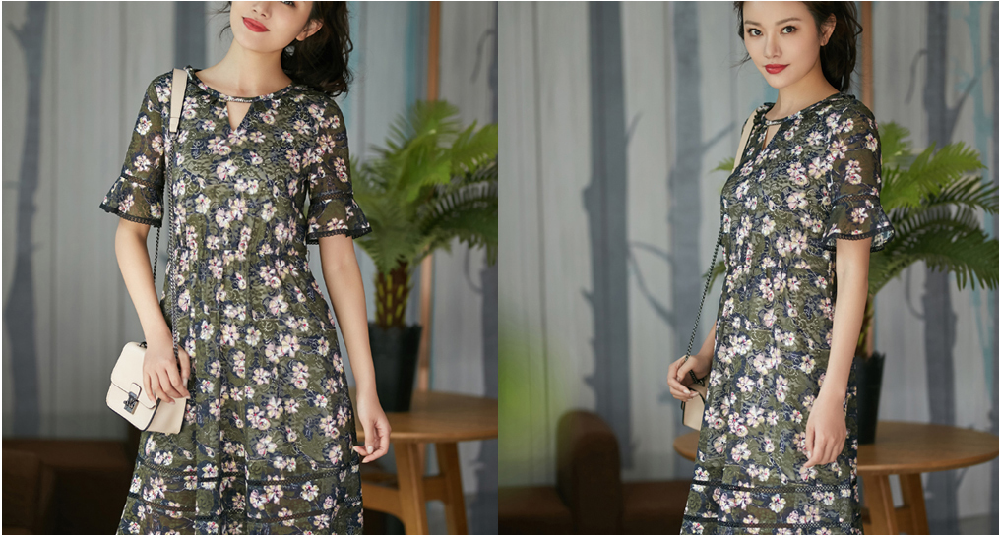
蕾丝又何尝不是"仙女”的标配呢,得益于面料质感及立体剪裁,连衣裙兼具了柔软与挺括,而喇叭袖口的设计则体现了现代宫廷之感,既古典又浪漫。把蕾丝作为点缀亦是“仙女裙”的惯用手法,雪纺衬衫式的上身设计具有较强的职业感,而蕾丝绣花裙摆的配合,提升了整体的精致度,从而突出了女性魅力。
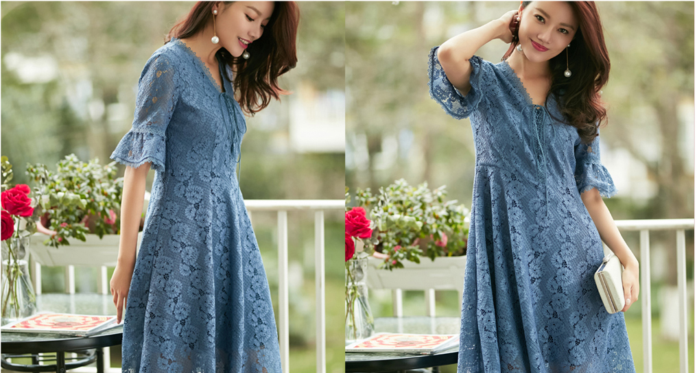
紧身牛仔一直以来就是毫不费力就时髦的单品之一,尤其对上衣的选择极度宽容,几乎可以与任何风格完美契合,最好搭一件白T,清新自然,或者配一件OVERSIZE衬衫,慵懒闲适。
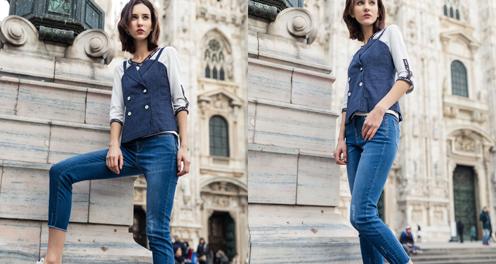
人人都对小黑裤的百搭青睐有加,殊不知,小白裤也是清爽显瘦利器,黑白斑马条纹投射光影魅力,如果搭配小黑裤,未免沉闷了,而小白裤则有提亮之效,上衣扎入裤中,腰线自然提升。
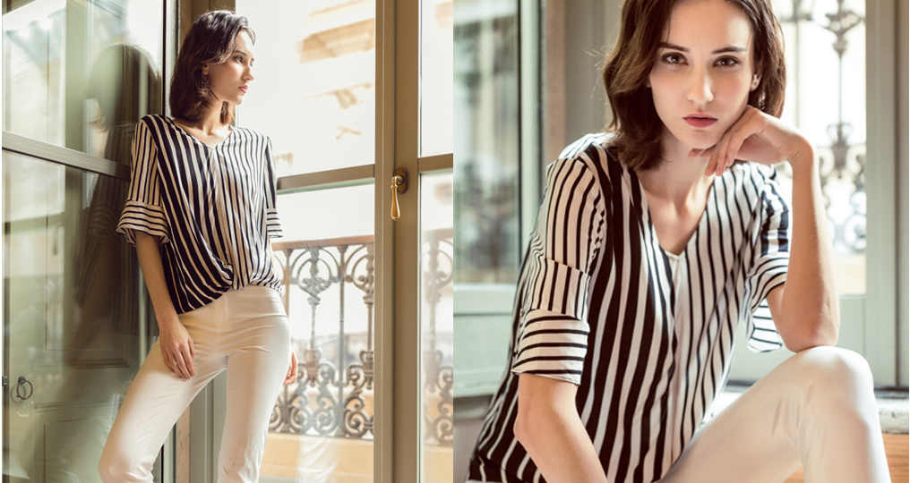
舒适是裤装除了简约以外的另一个特点,那么,阔腿裤则是把这一特点发挥到了极致,不受身形的束缚,自在不过如此,而当阔腿裤与背带裤结合时,又突破了年龄的困扰，走路都带风。
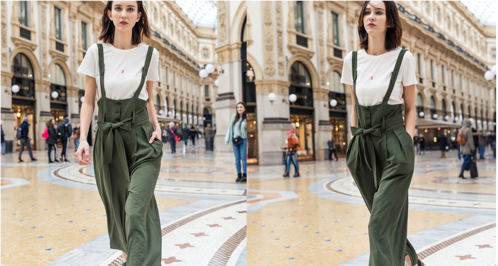
设计师们以旧翻新的能力好比一个个粉刷匠,竟然能让曾经难以被潮流接受的POLO衫也时髦起来,就连作为延伸品的POLO裙都炙手可热了。相比POLO衫, POLO裙的优点之一就是省去了搭配的烦恼,且收腰处理之后,更修饰身形,加入红白条纹,则弱化了年龄。
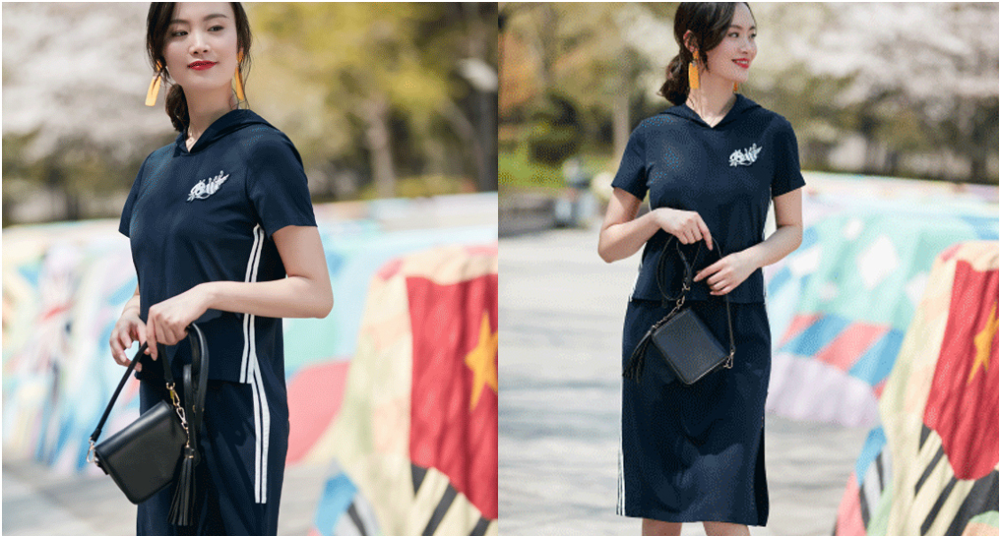
条纹亦是时髦运动风不可缺失的要素之一,尤其装饰于侧边之后,得到了大批时尚人士的宠爱,竖向延伸的条纹,更容易勾勒出优美曲线,裙边的开衩,随性而性感为日常的休闲带去美好的心情。

条纹亦是时髦运动风不可缺失的要素之一,尤其装饰于侧边之后,得到了大批时尚人士的宠爱,竖向延伸的条纹,更容易勾勒出优美曲线,裙边的开衩,随性而性感为日常的休闲带去美好的心情。
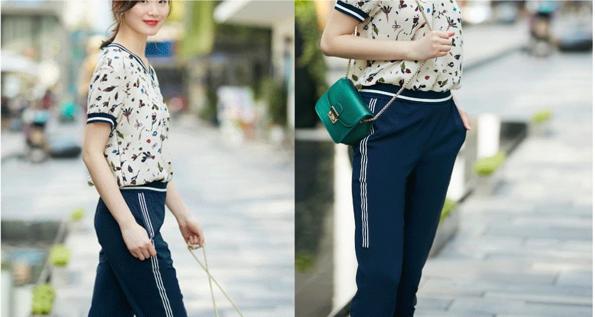
花开有期,时不待人,准备好行囊,就该出发了。既然是樱花季,怎么能少了樱花粉呢,浅浅的,浪漫中带着一点收敛却多了一份活力。 Jz致姿短款樱花粉色纸风衣灯笼袖口蓬出少女感,与文青系带长裙,撞出别样清新.
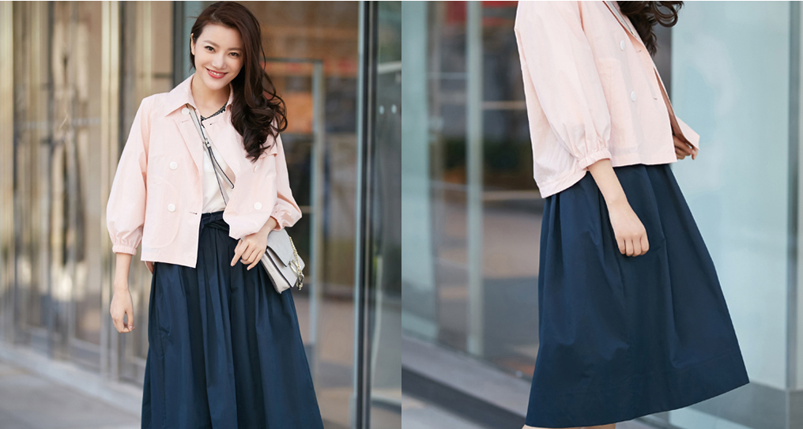
长款纸风衣的显著优点在于足够轻薄飘逸,尤其侧边开视之后,便具备了裙摆的功能,他立树下,望着无数樱花倚着风劲离开枝头,一个转身,衣据飞扬,乘兴,与它们共舞一曲吧。
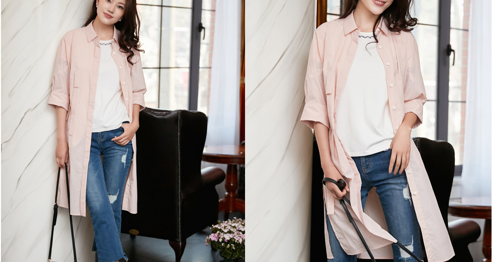
知道吗,樱花可不止粉色一种,白的,红的,各有姿态, IZ致姿红白解构印花连衣裙将樱花的纯粹与热烈集于一身,抽取式腰绳,既是装饰,亦能达到修饰身形的效果,漫步花路,优雅于心。
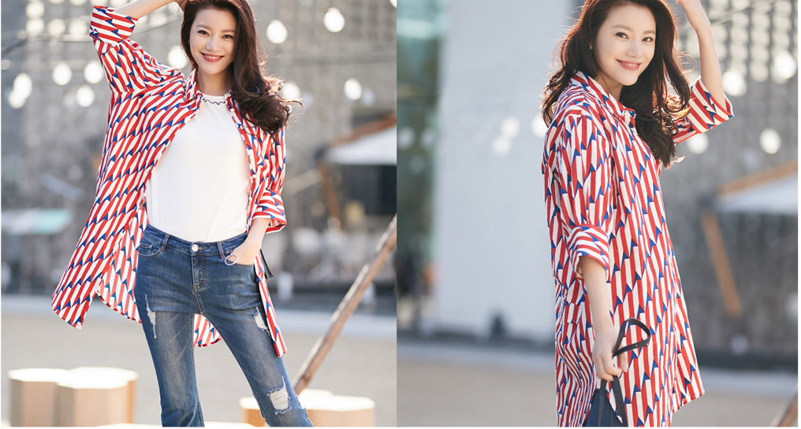